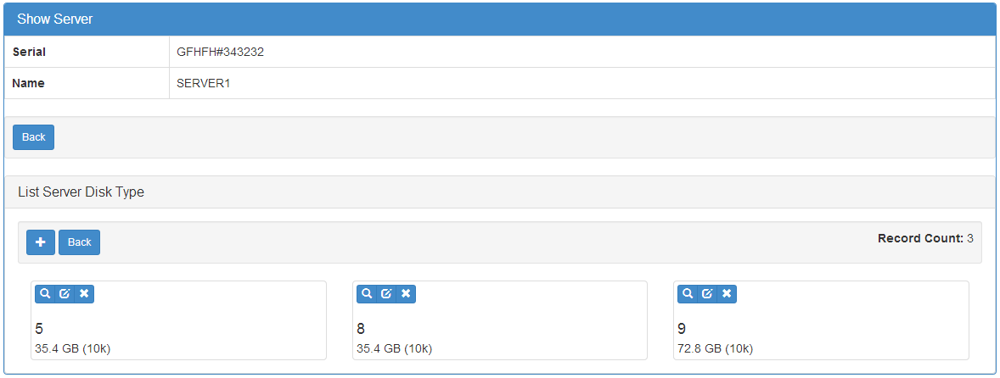

You can override and customize almost everything on the UI, or use different templates and widgets already on the framework.
Even better you can develop your own widgets or templates and contribute to the project.
F.A.B comes with bootswatch themes ready to use, to change bootstrap default theme just change the APP_THEME key’s value.
On config.py (from flask-appbuilder-skeleton), using spacelab theme:
APP_THEME = "spacelab.css"
Not using a config.py on your applications, set the key like this:
app.config['APP_THEME'] = "spacelab.css"
You can choose from the folowing themes
The index can be easily overridden by your own. You must develop your template, then define it in a IndexView and pass it to AppBuilder
The default index template is very simple, you can create your own like this:
1 - Develop your template (on your <PROJECT_NAME>/app/templates/my_index.html):
{% extends "appbuilder/base.html" %}
{% block content %}
<div class="jumbotron">
<div class="container">
<h1>{{_("My App on F.A.B.")}}</h1>
<p>{{_("My first app using F.A.B, bla, bla, bla")}}</p>
</div>
</div>
{% endblock %}
What happened here? We should always extend from “appbuilder/base.html” this is the base template that will include all CSS’s, Javascripts, and construct the menu based on the user’s security definition.
Next we will override the “content” block, we could override other areas like CSS, extend CSS, Javascript or extend javascript. We can even override the base.html completely
I’ve presented the text on the content like:
{{_("text to be translated")}}
So that we can use Babel to translate our index text
2 - Define an IndexView
Define a special and simple view inherit from IndexView, don’t define this view on views.py, put it on a separate file like index.py:
from flask.ext.appbuilder import IndexView
class MyIndexView(IndexView):
index_template = 'index.html'
3 - Tell F.A.B to use your index view, when initializing AppBuilder:
from app.index import MyIndexView
app = Flask(__name__)
app.config.from_object('config')
db = SQLA(app)
appbuilder = AppBuilder(app, db.session, indexview=MyIndexView)
Of course you can use a more complex index view, you can use any kind of view (BaseView childs), you can even change relative url path to whatever you want, remember to set default_view to your function.
You can override IndexView index function to display a different view if a user is logged in or not.
F.A.B. has a collection of widgets to change your views presentation, you can create your own and override, or (even better) create them and contribute to the project on git.
All views have templates that will display widgets in a certain layout. For example, on the edit or show view, you can display the related list (from related_views) on the same page, or as tab (default).
class ServerDiskTypeModelView(ModelView):
datamodel = SQLAInterface(ServerDiskType)
list_columns = ['quantity', 'disktype']
class ServerModelView(ModelView):
datamodel = SQLAInterface(Server)
related_views = [ServerDiskTypeModelView]
show_template = 'appbuilder/general/model/show_cascade.html'
edit_template = 'appbuilder/general/model/edit_cascade.html'
list_columns = ['name', 'serial']
order_columns = ['name', 'serial']
search_columns = ['name', 'serial']
The above example will override the show and edit templates that will change the related lists layout presentation.

If you want to change the above example, and change the way the server disks are displayed has a list just use the available widgets:
class ServerDiskTypeModelView(ModelView):
datamodel = SQLAInterface(ServerDiskType)
list_columns = ['quantity', 'disktype']
list_widget = ListBlock
class ServerModelView(ModelView):
datamodel = SQLAInterface(Server)
related_views = [ServerDiskTypeModelView]
show_template = 'appbuilder/general/model/show_cascade.html'
edit_template = 'appbuilder/general/model/edit_cascade.html'
list_columns = ['name', 'serial']
order_columns = ['name', 'serial']
search_columns = ['name', 'serial']
We have overridden the list_widget property with the ListBlock Class. This will look like this.
You have the following widgets already available
If you want to develop your own widgets just look at the code
Read the docs for developing your own template widgets Templates
Implement your own and then create a very simple class like this one:
class MyWidgetList(ListWidget):
template = '/widgets/my_widget_list.html'
If you want to have Add, edit and list on the same page, this can be done. This could be very helpful on master/detail lists (inline) on views based on tables with very few columns.
All you have to do is to mix CompactCRUDMixin class with the ModelView class.
from flask.ext.appbuilder.models.sqla.interface import SQLAInterface
from flask.ext.appbuilder.views import ModelView, CompactCRUDMixin
from app.models import Project, ProjectFiles
from app import appbuilder
class MyInlineView(CompactCRUDMixin, ModelView):
datamodel = SQLAInterface(MyInlineTable)
class MyView(ModelView):
datamodel = SQLAInterface(MyViewTable)
related_views = [MyInlineView]
appbuilder.add_view(MyView, "List My View",icon = "fa-table", category = "My Views")
appbuilder.add_view_no_menu(MyInlineView)
Notice the class mixin, with this configuration you will have a Master View with the inline view MyInlineView where you can Add and Edit on the same page.
Of course you could use the mixin on MyView also, use it only on ModelView classes.
Take a look at the example: https://github.com/dpgaspar/Flask-appBuilder/tree/master/examples/quickfiles

Next we will take a look at a different view behaviour. A master detail style view, master is a view associated with a database table that is linked to the detail view.
Let’s assume our quick how to example, a simple contacts applications. We have Contact table related with Group table.
So we are using master detail view, first we will define the detail view (this view can be customized like the examples above):
class ContactModelView(ModelView):
datamodel = SQLAInterface(Contact)
Then we define the master detail view, where master is the one side of the 1-N relation:
class GroupMasterView(MasterDetailView):
datamodel = SQLAInterface(Group)
related_views = [ContactModelView]
Remember you can use charts has related views, you can use it like this:
class ContactTimeChartView(TimeChartView):
datamodel = SQLAInterface(Contact)
chart_title = 'Grouped Birth contacts'
chart_type = 'AreaChart'
label_columns = ContactModelView.label_columns
group_by_columns = ['birthday']
class GroupMasterView(MasterDetailView):
datamodel = SQLAInterface(Group)
related_views = [ContactModelView, ContactTimeChartView]
This will show a left side menu with the groups and a right side list with contacts, and a time chart with the number of birthdays during time by the selected group.
Finally register everything:
// if Using the above example with related chart
appbuilder.add_view_no_menu(ContactTimeChartView)
appbuilder.add_view(GroupMasterView, "List Groups", icon="fa-folder-open-o", category="Contacts")
appbuilder.add_separator("Contacts")
appbuilder.add_view(ContactModelView, "List Contacts", icon="fa-envelope", category="Contacts")
{kind=link}
{kind=link}